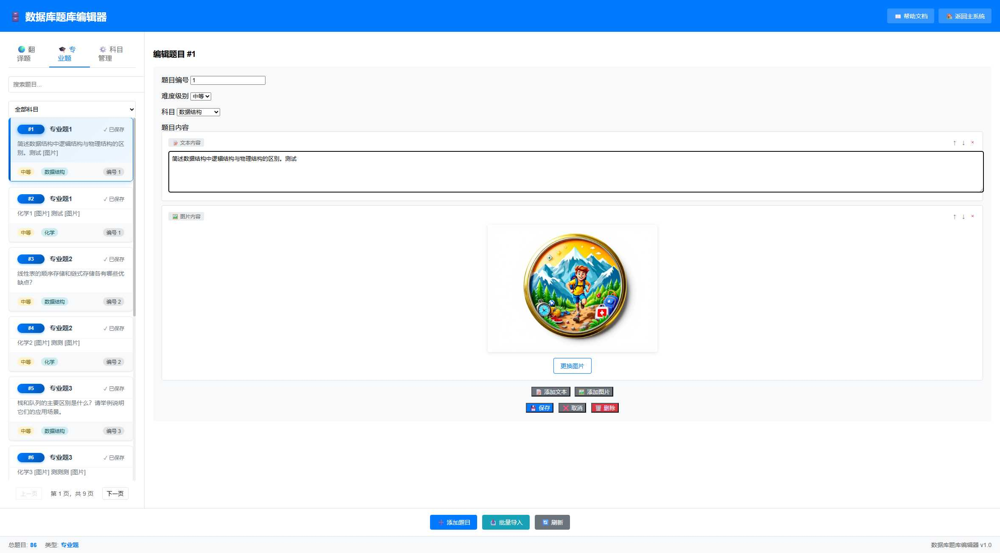

🗄️ 数据库题库编辑器帮助文档
🎯 功能概述
数据库题库编辑器是考试系统的核心组件，专门用于管理考试题目和题库内容。支持翻译题和专业题的分类管理，提供完整的增删改查功能。
主要功能：
- 题目分类管理：翻译题、专业题分别管理，支持科目分类
- 多媒体内容：支持文本和图片混合内容，灵活组合
- 智能搜索：支持题目内容搜索和科目筛选
- 批量操作：支持批量导入题目，提高效率
- 分页浏览：每页显示10道题目，支持翻页浏览
- 实时保存：编辑后自动保存到数据库
🖥️ 界面介绍

图1：数据库编辑器主界面（翻译题）
界面布局说明：
- 顶部导航：系统标题和返回链接
- 左侧边栏：题目类型切换、搜索框、题目列表
- 右侧编辑区：题目详细编辑界面
- 底部工具栏：添加、导入、刷新等操作按钮
- 状态栏：显示题目统计和版本信息
题目类型标签：
| 标签 | 图标 | 说明 | 用途 |
|---|---|---|---|
| 翻译题 | 🌍 | 英文翻译题目 | 考试步骤3使用 |
| 专业题 | 🎓 | 专业课相关题目 | 考试步骤4使用 |
| 科目管理 | ⚙️ | 专业题科目分类 | 管理专业题分类 |
🌍 翻译题管理
翻译题特点：
翻译题主要用于英文翻译环节，通常包含英文段落和相关图片。题目内容可以是纯文本、纯图片或文本图片混合形式。
添加翻译题：
- 点击标签切换到翻译题管理
- 点击按钮
- 系统自动分配题目编号（从当前最大编号+1开始）
- 设置难度级别：简单、中等、困难
- 添加题目内容（文本和/或图片）
- 点击完成添加
提示：翻译题不需要设置科目，系统会自动归类为翻译题类型。
🎓 专业题管理

图2：专业题管理界面
专业题特点：
专业题按科目分类管理，每道题目必须指定所属科目。考试时会先让考生选择科目，然后从该科目中随机抽取题目。
科目筛选：
在专业题管理界面，左侧会显示科目筛选下拉框，包含：
- 全部科目：显示所有专业题
- 具体科目：只显示该科目的题目
添加专业题：
- 点击标签
- 点击按钮
- 设置题目编号和难度级别
- 重要：必须选择科目分类
- 添加题目内容
- 保存题目
注意：专业题必须指定科目，否则无法保存。如果需要的科目不存在，请先到科目管理中添加。
⚙️ 科目管理
科目管理功能：
- 添加科目：为专业题创建新的科目分类
- 编辑科目：修改科目名称和描述
- 删除科目：删除不需要的科目（需确保该科目下无题目）
- 科目统计：查看每个科目下的题目数量
当前系统科目：人工智能导论、会计学、化学、市场营销、数据库系统、数据结构、计算机科学等。
✏️ 题目编辑

图3：题目编辑界面
编辑界面组成：
| 区域 | 功能 | 说明 |
|---|---|---|
| 基本信息 | 题目编号、难度、科目 | 设置题目的基本属性 |
| 内容编辑 | 文本和图片内容 | 支持多个内容块的组合 |
| 操作按钮 | 保存、取消、删除 | 题目编辑操作 |
内容编辑功能：
文本内容：
- 点击添加文本块
- 在文本框中输入题目内容
- 支持多行文本和特殊字符
图片内容：
- 点击添加图片块
- 选择本地图片文件上传
- 支持JPG、PNG、GIF格式
- 建议图片大小不超过2MB
内容排序：
- 使用和按钮调整内容顺序
- 使用按钮删除内容块
📥 批量操作
批量导入功能：
支持批量导入题目，可以快速添加大量题目到题库中。
导入步骤：
- 点击按钮
- 选择要导入的题目类型（翻译题或专业题）
- 按照系统提供的格式准备数据
- 上传数据文件或粘贴文本内容
- 系统自动分配题目编号并保存
注意：批量导入时，系统会自动从当前最大题目编号+1开始分配新编号，确保编号不重复。
💡 使用技巧
题目编号管理：
- 系统自动管理题目编号，无需手动设置
- 删除题目后，编号不会自动回收，保持历史一致性
- 新增题目总是从最大编号+1开始
搜索和筛选：
- 使用搜索框可以快速查找包含特定关键词的题目
- 专业题支持按科目筛选，提高管理效率
- 搜索结果实时更新，支持模糊匹配
题目状态管理：
- 已保存状态：显示绿色✓标记，表示题目已成功保存
- 使用状态：考试中抽取的题目会被标记为"已使用"
- 重置状态：通过系统重置可以清除所有使用标记
图片管理建议：
- 图片文件建议大小控制在2MB以内
- 推荐使用JPG格式，平衡质量和文件大小
- 图片会自动存储到assets/uploads目录
- 删除题目时，相关图片文件需要手动清理
🔧 常见问题
Q: 为什么无法保存专业题？
可能原因：
- 未选择科目分类
- 题目内容为空
- 网络连接问题
Q: 图片上传失败怎么办？
检查项目：
- 图片格式是否为JPG、PNG或GIF
- 文件大小是否超过2MB
- 服务器uploads目录是否有写入权限
Q: 如何批量删除题目？
注意：系统暂不支持批量删除功能，需要逐个删除题目。删除前请确认题目未被使用。